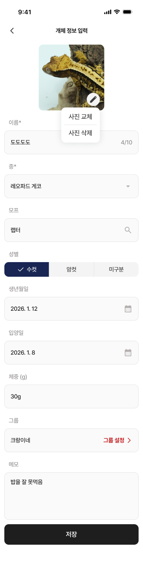
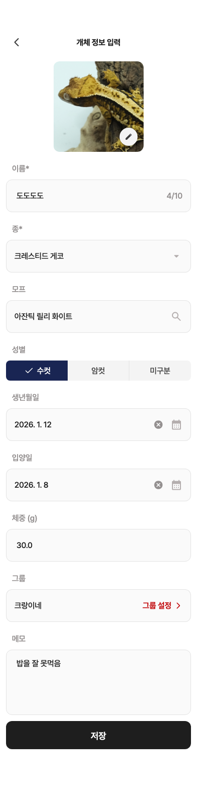
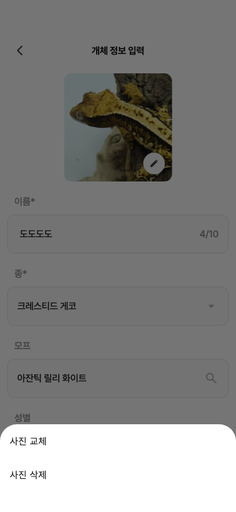
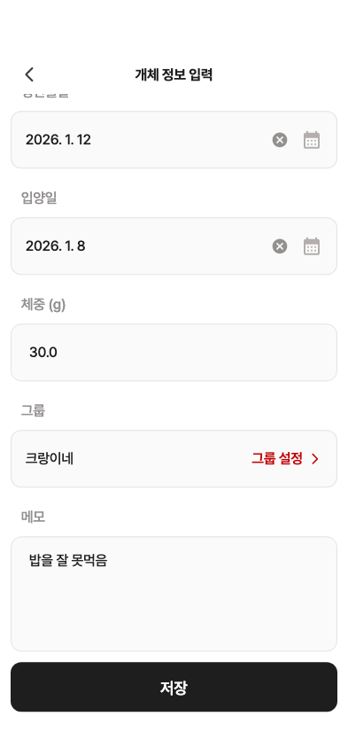

26 · 개체 정보 입력 완료 상태
25번 승인 및 중간 푸시 완료. 이번 화면은 수정 전 비교입니다.
수정 제안 5가지
① 사진 하단시트 → 사진 아래 작은 교체·삭제 메뉴
② 원형 버튼 안 연필 그림 크기
③ 이름·체중·메모의 실제 입력 글자 4pt 왼쪽 보정
④ 날짜 옆 X 제거 · 날짜 선택창에서 초기화 기능 유지
⑤ 체중30.0 →30g (표시만, 저장값은 숫자)
사진·입력칸 기본 배치와 활성 저장 버튼은 맞습니다. 종/모프는 승인 범위에 따라 크레스티드 게코/아잔틱 릴리 화이트를 사용했습니다.
Figma · 사진 메뉴 열림
현재 제품 위젯 · 전체 입력 상태
현재 앱의 사진 메뉴
모바일 화면 · 하단시트로 열림
스크롤 끝 · 저장 활성
실서버 저장/사진 삭제는 하지 않았습니다. 사진은 동일 원본의 검수 fixture이며 위젯 캡처에 OS 상태바는 없습니다.
수치·색상·버튼·동작 상세